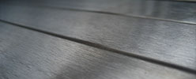

charakterystyka gatunków stali
AISI 301
Stal nierdzewna cechująca się
wysoką granicą sprężystości, temperatura pracy do 300 °C. Zastosowanie:
w przemyśle samochodowym, na sprężyny i urządzenia sprężynowe.
AISI 303
Austenityczna
stal chromowo-niklowa. Zwiększona zawartość siarki (0,15-0,35%)
powoduje, że materiał charakteryzuje się bardzo dobrą skrawalnością.
Siarka znacząco jednak obniża właściwości mechaniczne oraz odporność
na korozję. Parametry te osiągają jednak lepsze wartości niż stal w
gatunku AISI 430F i odpowiadają w przybliżeniu stali AISI 430.
Materiał nie nadaje się do przeróbki plastycznej na zimno oraz do
spawania (topi się). Ten gatunek stali dostarczany jest tylko i
wyłącznie w postaci prętów. Zastosowanie: do
produkcji nakrętek, śrubek, elementów rotacyjnych, obrabianych na
automatach, jeśli wymagana jest lepsza odporność na korozję, niż w
przypadku gatunku AISI 430.
AISI
304
Austenityczna stal chromowo-niklowa będąca najczęściej
używanym rodzajem materiału nierdzewnego o bardzo dobrej odporności
na korozję i spawalności, nadaje się do formowania na zimno. Odporna
na działanie wody, pary wodnej, wilgotnego powietrza, kwasów
spożywczych, słabych kwasów organicznych i nieorganicznych. Odporna
na korozję międzykrystaliczną po spawaniu. Po spawaniu nie stosuje
się obróbki cieplnej (niska zawartość węgla). Temperatura pracy do
300°C, w wyższych temperaturach powinno się stosować stal utwardzoną
tytanem AISI 321. Dobrze się poleruje, obrabia krawędzie i zwija,
nadaje się do tłoczenia. Przy obróbce skrawaniem, ze względu na
skłonności do sztywnienia, należy stosować ostre przyrządy z
wysokostopowej stali szybkotnącej, węglika spiekanego lub stopów
karbidowych. Dobra spawalność z zastosowaniem wszystkich metod
spawania łukiem elektrycznym. Nie nadaje się do spawania gazowego. Zastosowanie:
w przemyśle maszynowym i nuklearnym, w budownictwie i architekturze,
w urządzeniach transportowych, w przemyśle spożywczym,
farmaceutycznym i kosmetycznym, w budowie przyrządów chemicznych i
pojazdów silnikowych, w produkcji przyrządów chirurgicznych,
urządzeń sanitarnych, przedmiotów i sprzętów gospodarstwa domowego
oraz wyrobów artystycznych.
AISI
304L
Austenityczna stal chromowo-niklowa o podwyższonej
odporności na korozję międzykrystaliczną (ekstremalnie niska
zawartość węgla). Materiał dobrze spawalny, blachy o grubości
powyżej 6mm, nawet jeśli były spawane w niezbyt korzystnych
warunkach, nie muszą być poddawane dodatkowej obróbce cieplnej.
Bardzo dobrze się poleruje oraz łatwo poddaje się formowaniu na
zimno. Warunki dotyczące obróbki skrawaniem podobnie jak w przypadku
gatunku AISI 304. Temperatura pracy do 350°C. Zastosowanie:
podobnie jak w przypadku AISI 304.

AISI 304PS/DDQ
Materiał nierdzewny
przeznaczony do głębokiego tłoczenia. Specjalne właściwości
pozwalające na łatwe kształtowanie osiągnięto dzięki modyfikacji
składu chemicznego oraz obróbce termicznej w fazie walcowania. Zastosowanie:
naczynia kuchenne, umywalki, zlewy.
AISI
309/AISI 310
Żaroodporne, nierdzewne materiały o wysokiej
zawartości chromu i niklu. Zastosowanie: urządzenia
żaroodporne pracujące w temperaturze nawet do 1150°C.
AISI 316
Austenityczna,
kwasoodporna stal chromowo-niklowo-molibdenowa o podwyższonej
odporności na korozję (wyższa zawartość molibdenu). Dobra
spawalność, po zespawaniu blachy o grubości do 6mm są odporne na
korozję międzykrystaliczną nawet bez dodatkowej obróbki cieplnej
(niska zawartość węgla). Przeznaczona do pracy w temperaturze
poniżej 300°C. Materiał bardzo dobrze się poleruje, obrabia
krawędzie i zwija oraz nadaje się do tłoczenia. Warunki obróbki
skrawaniem podobnie jak w przypadku AISI 304. Zastosowanie:
wszędzie tam, gdzie wymagane są elementy konstrukcyjne, urządzenia i
narzędzia o średniej twardości, wystawione na działanie wody, pary
wodnej oraz wilgotnego powietrza, w przemyśle maszynowym, do budowy
turbin, pomp, przy produkcji armatury, przedmiotów i sprzętów
gospodarstwa domowego, urządzeń sportowych, przyrządów medycznych,
chirurgicznych, itp.
AISI
316L
Austenityczna, kwasoodporna stal
chromowo-niklowo-molibdenowa, o zawartości węgla poniżej 0,03%,
wysokoodporna na działanie kwasów, o średnich skłonnościach do
korozji wżerowej w roztworach zawierających chlor. Bardzo dobrze
spawalna, nie wymaga stosowania po zespawaniu dodatkowej obróbki
cieplnej. Stal o wysokiej odporności na korozję międzykrystaliczną,
polerując można uzyskać lustrzany połysk, szczególnie dobrze
formowalna (wyginanie, zwijanie głębokie tłoczenie, prasowanie
itp.). Zastosowanie: elementy konstrukcyjne,
urządzenia i aparatura chemiczna o wysokim stopniu zużywalności
(obecność chlorków), przy produkcji urządzeń do regulacji ciepłej
wody oraz na elementy konstrukcyjne narażone na działanie wody
morskiej.
AISI 316Ti
Austenityczna, kwasoodporna stal chromowo-niklowo-molibdenowa,
utwardzona dodatkiem tytanu. Wysoka odporność na kwasy, wysoka
stabilność, brak ryzyka głębokiej korozji miejscowej (zawartość
molibdenu). Po zespawaniu elementów nawet o grubości powyżej 6mm nie
jest konieczne stosowanie dodatkowej obróbki cieplnej. Ze względu na
zwiększoną zawartość tytanu wysoki połysk nie jest osiągalny. Nadaje
się do głębokiego tłoczenia, można obrabiać krawędzie i zwijać.
Warunki obróbki skrawaniem analogiczne jak w przypadku AISI 304.
Dobra spawalność z zastosowaniem wszystkich metod spawania łukiem
elektrycznym. Nie jest możliwe spawanie gazowe. Zastosowanie:
elementy konstrukcyjne, urządzenia i aparatura chemiczna z wymaganą
odpornością na halogenki i kwasy nie podlegające utlenianiu, w
budownictwie na elementy o wysokim stopniu zużywalności. Typowym
przykładem zastosowania gatunku AISI 316Ti są technologie do
produkcji celulozy, włókna wiskozowego ciętego, materiałów
tekstylnych, barwników, nawozów i tworzyw sztucznych, w przemyśle
fotograficznym, armaceutycznym i naftowym.

AISI 321
Austenityczna stal
chromowo-niklowa utwardzana dodatkiem tytanu. Po zespawaniu odporna
na korozję międzykrystaliczną bez konieczności stosowania dodatkowej
obróbki cieplnej nawet przy spawaniu grubszych części. W przypadku
zbiorników ciśnieniowych może być stosowana przy temperaturze pracy
do 400°C, natomiast jako materiał odporny na tworzenie się
zgorzeliny może być stosowany do temperatury 800°C. Zwiększona
zawartość tytanu uniemożliwia polerowanie stali na wysoki połysk.
Gatunek ten pozwala na uzyskanie dobrych efektów formowania w
procesie głębokiego tłoczenia oraz podczas obrabiania krawędzi i
zwijania. Warunki obróbki skrawaniem podobnie jak w przypadku AISI
304. Dobra spawalność z zastosowaniem wszystkich metod spawania
łukiem elektrycznym. Spawanie gazowe nie jest możliwe. Zastosowanie:
odporność chemiczna analogiczna jak w przypadku AISI 304, podobne
zastosowanie jeśli nie jest wymagany wysoki połysk. Stal stosowana w
konstrukcjach, w których grubość materiału wynosi więcej niż 6mm, a
które nie mogą być poddane obróbce cieplnej po zespawaniu, na
urządzenia o wysokim stopniu zużywalności, elementy konstrukcyjne i
łączniki oraz we wszystkich gałęziach przemysłu spożywczego i
chemicznego.
AISI 409
Gatunek stali podobny do gatunku AISI 430 wzbogacony tytanem,
bardziej odporny na negatywny wpływ środowiska. Zastosowanie:
wkłady do kominów.
AISI
410, AISI 420, AISI 420F
Gatunki stali nierdzewnych, o
zwiększonej zawartości węgla, do hartowania. Po hartowaniu
charakteryzują się zwiększoną twardością (do max 100HRB). Zastosowanie:
na elementy o podwyższonej trwałości (sprężyny, tłoki, śruby i
noże).
AISI 430
Ferrytyczna stal chromowa (17% Cr) o dobrych właściwościach
antykorozyjnych, bardzo dobrze polerująca się, o wysokiej
rozciągliwości i giętkości. Podczas formowania w temperaturze
poniżej 20°C następuje obniżenie własności plastycznych stali.
Skrawalność jest porównywalna ze stalami węglowymi stosowanymi w
budownictwie. Podobnie jak w przypadku innych materiałów miękkich,
należy liczyć się z gorszym odprowadzaniem wiórów. Przy grubościach
blach powyżej 3mm formowanie będzie łatwiejsze, jeśli materiał i
przyrząd zostaną ogrzane do temperatury 100-300°C. Spawanie nie jest
zalecane. Po spawaniu zaleca się wyżarzanie w temperaturze
600-800°C. Zastosowanie: bardzo szerokie, dzięki
odporności na działanie wody, pary wodnej i wilgoci, słabych kwasów
i alkoholi, ma zastosowanie w produkcji sprzętu gospodarstwa
domowego, w lokalach gastronomicznych, przy produkcji produktów
spożywczych i napojów, w architekturze, w branży meblarskiej, w
technice medycznej, przemyśle chemicznym itp.
AISI 430F
Uszlachetniona stal automatowa o
17-procentowej zawartości chromu z dodatkiem molibdenu (max 0,6%) i
nieco zwiększoną zawartością siarki (min 0,15%) w celu poprawienia
skrawalności. Nie nadaje się do przeróbki plastycznej na zimno i
spawania. Zwiększona zawartość siarki powoduje obniżenie odporności
na korozję oraz obniżenie ciągliwości. Zastosowanie:
do produkcji elementów rotacyjnych w automatach i innych elementów
nie wymagających wysokich właściwości antykorozyjnych.